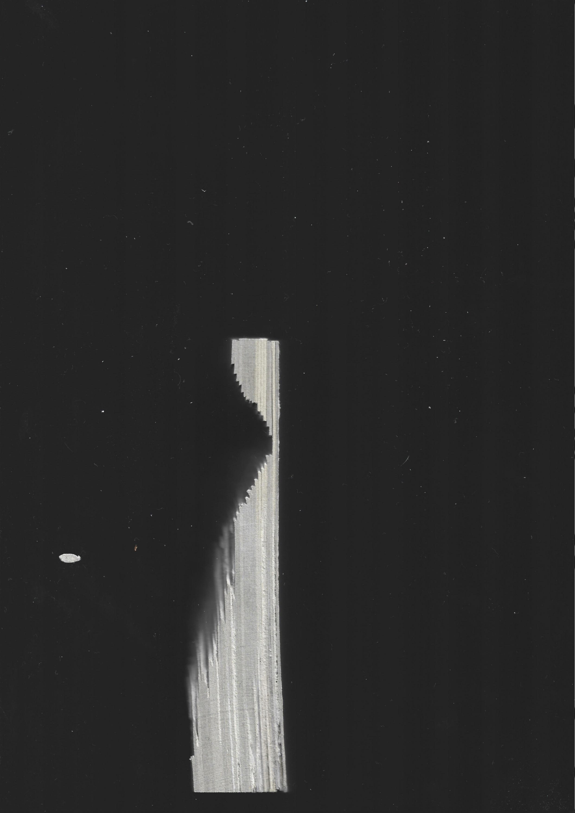
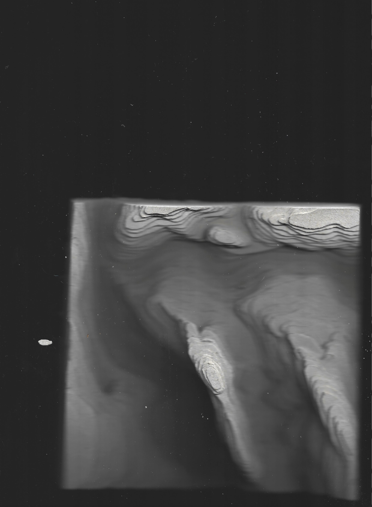
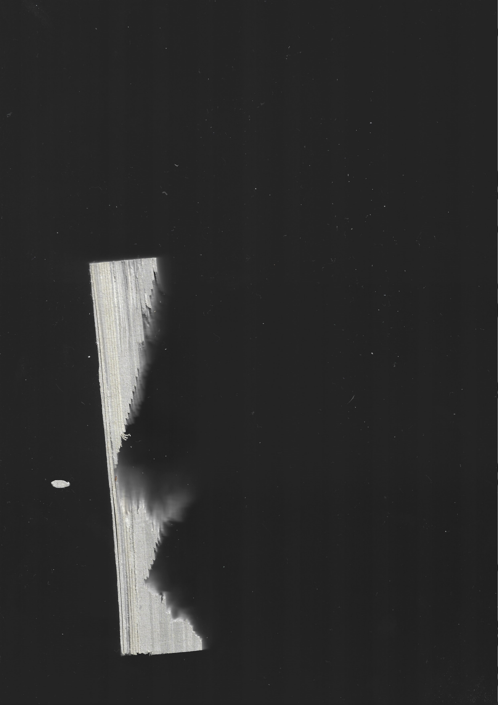
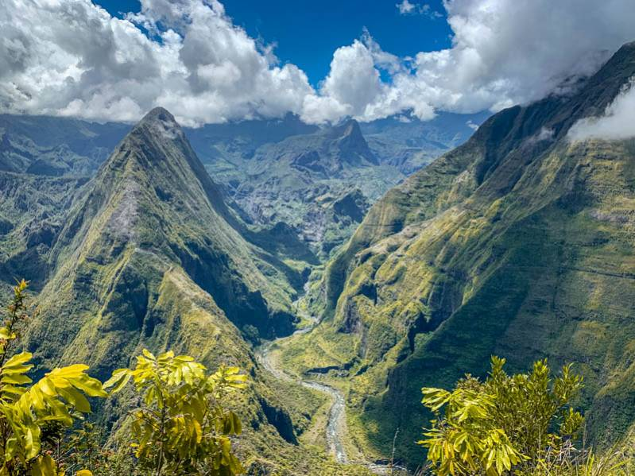
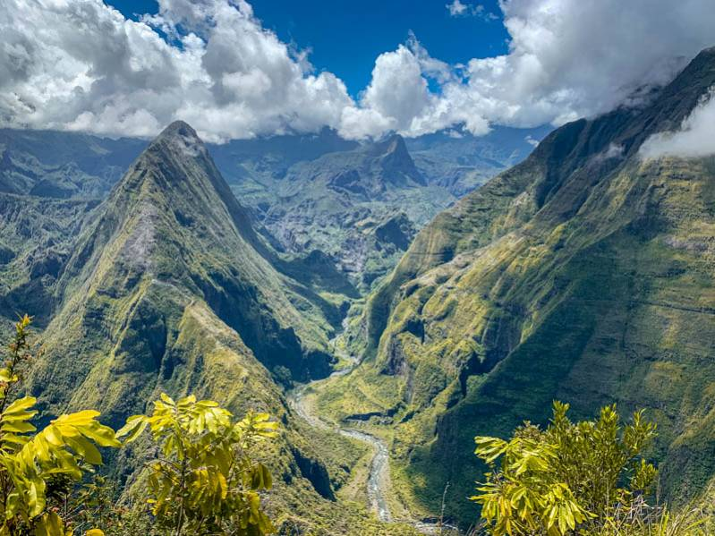
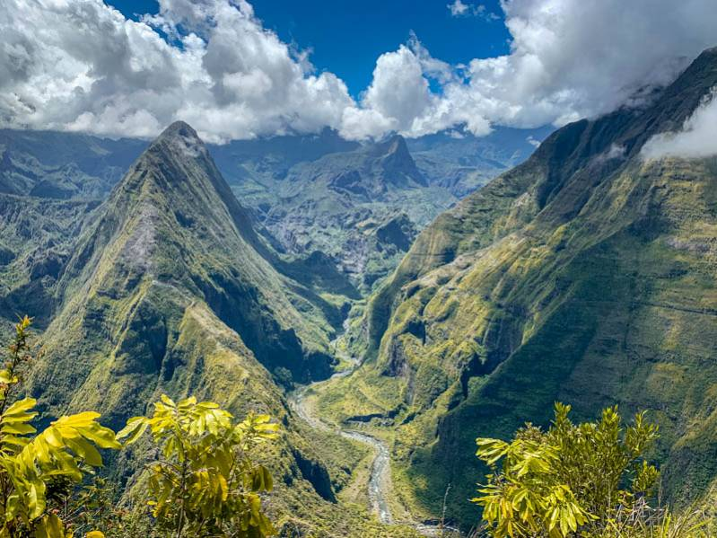

Eloise Caro Portfolio
Contact
@eloise.draw
  

Strates\\
Ce projet en volume à pour but de recréer un paysage montagneux à l'aide de strates de 1mm. Cette structure fait 4cm de haut et est une reconstitution du cirque de Mafate à la Réunion.
Retour Acceuil


 
